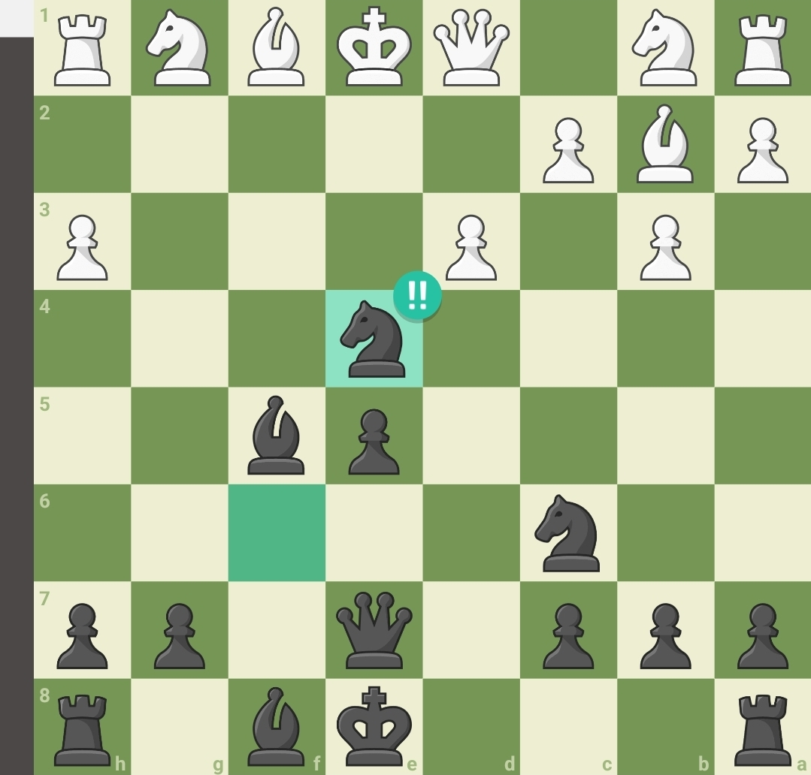

BRILLIANT MOVE · NOVEMBER 13, 2026
The Knight Sacrifice That Sparked a King Hunt
JorgeXurxo (716) vs. base_d_pawn (1040) · Chess.com Daily · 0–1

The brilliant move
After 9.fxe4, Black played 9...Nxe4!!, the move Chess.com classified as Brilliant. White captured the knight with 10.dxe4, but Black immediately struck with 10...Qh4+.
The attack continued 11.Ke2 Qxe4+ 12.Kd2 Rd8+. The exposed white king faced a coordinated attack from Black's queen and rook. The game ended with 17...Nd4#.
What I learned
Personal reflection to be added.